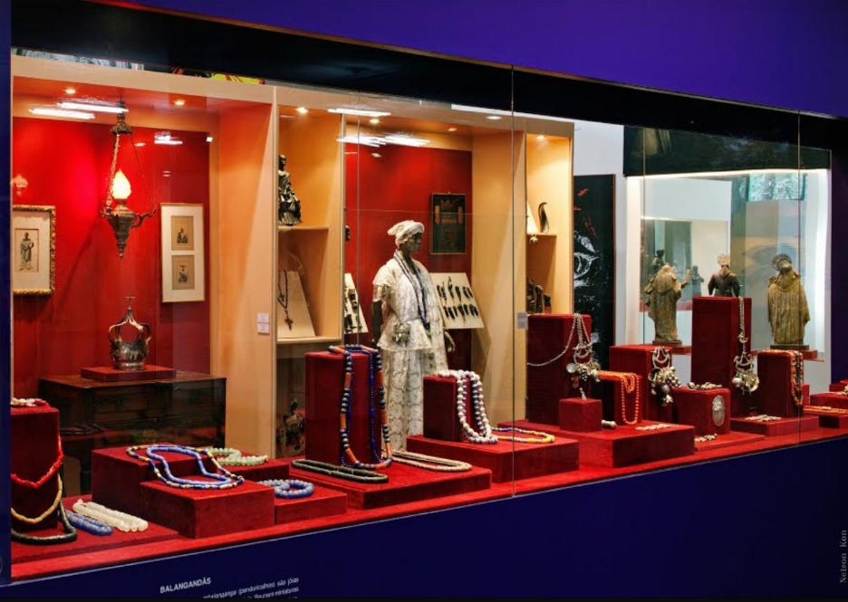

Roots Guide
Pontos Historicos

Museu do Negro do Maranhão
Resumo: Museu que preserva a história e cultura afro-maranhense. Representa a força da religiosidade e das festas populares como Tambor de Mina e Bumba Meu Boi. Curiosidades: Fica na antiga Igreja de Nossa Senhora do Rosário dos Pretos, do século XVIII. Fica no Centro Histórico, Patrimônio Mundial. Valor de entrada: Entrada franca, de segunda-feira, das 08:00 às 16:30, e terça a domingo, das 08:00 às 18:00 (As visitas são suspensas durante as celebrações religiosas). Endereço: R. do Egito, 33 - Centro, São Luís - MA, 65010-190 Valor de entrada: Gratuito, fecha às segundas. Link do Maps: link